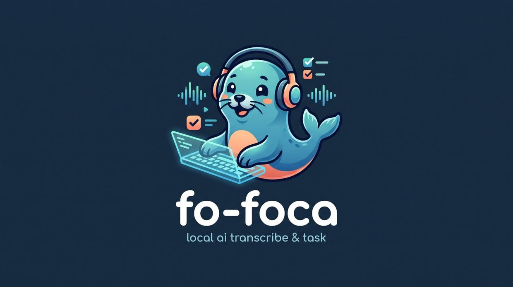
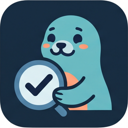
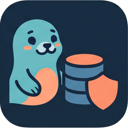
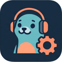

Records your mic and system audio, transcribes it, and turns it into a summary and a task list. No bot joins your call. No cloud. No account.
What it does
Local meeting-notes apps usually assume a big GPU or an Apple Silicon Mac. fo-foca starts from the other end: it is built around what a small GPU can actually do, from measured numbers, and lets you pick the layout that fits.
Records your microphone and the system audio (Meet, Zoom, Teams, anything) and transcribes it locally with Whisper, live, while you talk.

A local LLM writes a "summary so far" during the call and a final summary at the end, grounded in the transcript so every claim can be checked.
Action items, decisions, names, numbers and dates pulled out of the meeting.

Audio, transcripts and notes never leave your computer. Models run as local servers on your GPU or CPU.

Choose where each model runs (GPU, CPU, or both on a 2 GB GPU taking turns); a GPU memory meter shows what fits. Automatic hardware probing and benchmarking is planned
A native desktop app (Rust + Tauri), not a browser in a box.
How it works
Your mic and the system audio are recorded on separate tracks, so your own lines are labelled from the start. Models run as separate local servers that fo-foca loads, unloads and swaps without restarting.
large-v3-turbo), in 30 s chunks.When both models fit in VRAM they stay loaded. When they don't, Whisper stays on the GPU while you talk and the LLM is swapped in for summaries — about 3 seconds. Settings shows the GPU memory each layout needs.
Reference numbers
Whisper large-v3-turbo q5_0 on GPU | 824 MiB VRAM · ~0.36× real time on a whole file · ~0.59× per 30 s chunk |
| pt-BR word error rate | ~2 % (vs ~12 % for Whisper small) |
| Qwen3.5-2B Q4_K_M on GPU | 1.4–1.6 GB VRAM (8K–32K context) · ~17 tokens/s |
| Swap Whisper ⇄ LLM | ~3 s |
| Both models on the GPU at once | ✗ doesn't fit in 2 GB → swap layout |
Install
Linux x86-64, test builds. Takes a few minutes plus the model download (~1.9 GB).
Debian / Ubuntu package names. With an NVIDIA GPU, use the NVIDIA driver, which includes Vulkan.
Get fofoca-setup.sh from the release above. Everything goes to ~/.local/share/fofoca/, where the default config looks.
llama-server (llama.cpp, Vulkan) is downloaded.whisper-server is built from source (whisper.cpp ships no Linux build), which needs sudo apt install git cmake build-essential glslc libvulkan-dev.In Settings → Models, check that every row is green, and pick the GPU for each engine.
Status
Linux first (PipeWire); Windows and macOS are planned. Any GPU that works with Vulkan should be usable — NVIDIA, AMD or Intel — or CPU only. Hardware reports and pt-BR test recordings are very welcome.